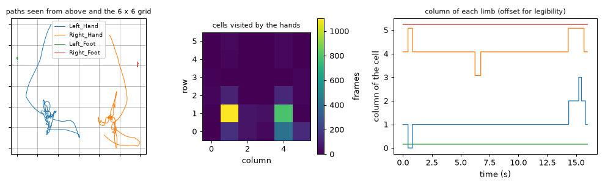
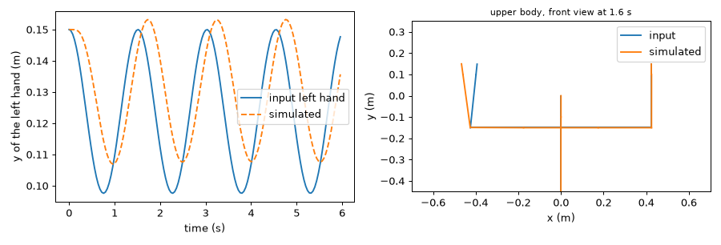
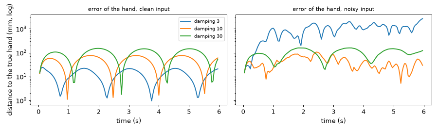
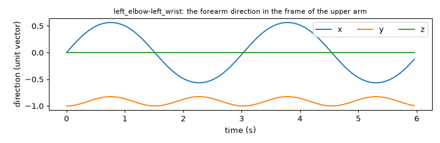
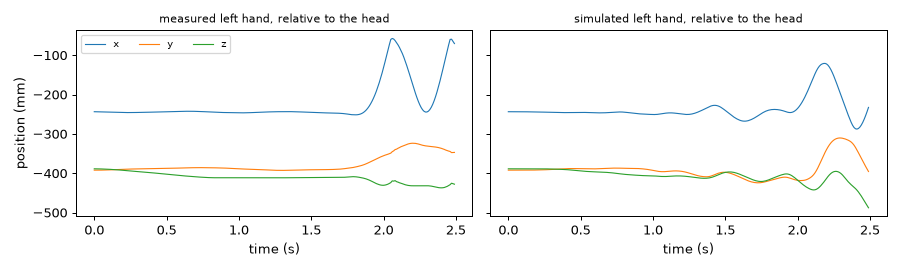
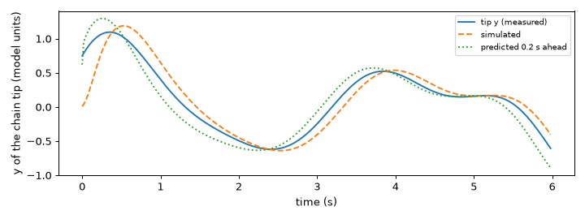
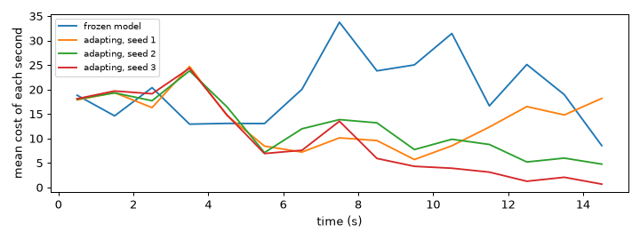

Note
Go to the end to download the full example code.
Physical signals: points and models#
Layer 1 of PyEyesWeb holds the signals that are produced straight from the raw frames of a recording, before any statistics
are computed. This tutorial covers the ones that take points: HitCellDetector tells in which cell of a grid each point
is, a mass-spring humanoid turns a captured skeleton into a smooth, plausible one, PointsPredictor and the generic
models look a moment ahead, and GenericModelEstimator fits a model to a movement.
- Goals:
locate points in a grid of cells; follow a skeleton with a mass-spring humanoid and read the effect of the damping; pass a real recording through
joint_map; extract bone directions and feed them back to a simulator; predict the next positions of points; build, drive, forecast and fit a model of your own.- Prerequisites:
- Data:
trial 10 of the example session (sumo squat with weight shift) for the hit cells, trial 7 (clapping hands) for the humanoid (seconds 3 to 5.5, a moderate arm movement); synthetic skeletons and chains elsewhere.
- Time:
about 30 minutes.
Hit cells: where in the horizontal plane are the hands and feet?#
HitCellDetector divides a rectangle into cells_along_x columns and
cells_along_y rows and says, for each point of a frame, in which cell it lies. The output cells has one row
(i, j) per input point: i is the row (counted along the second coordinate) and j the column (along the first),
starting from 0. Here the points are the hands and the feet of trial 10 seen from above. The recording is in
millimetres: to_units("m") converts it, and the vertical axis of the data is y, so the horizontal plane is
(x, z). See Physical signals for the whole layer.
import matplotlib.pyplot as plt
import numpy as np
from pyeyesweb.datasets import load_qualisys_trial
from pyeyesweb.physical_signals import HitCellDetector
trial = load_qualisys_trial(10, start=0, stop=16).to_units("m")
limbs = ["Left_Hand", "Right_Hand", "Left_Foot", "Right_Foot"]
plane = np.stack([trial.joint(name)[:, [0, 2]] for name in limbs], axis=1) # (frames, 4 points, x and z)
time = trial.timestamps
low, high = plane.reshape(-1, 2).min(axis=0), plane.reshape(-1, 2).max(axis=0)
print("area covered by the limbs (m): x", low[0].round(2), "to", high[0].round(2), "| z", low[1].round(2), "to", high[1].round(2))
detector = HitCellDetector(cells_along_x=6, cells_along_y=6, x_min=low[0], x_max=high[0], y_min=low[1], y_max=high[1])
print(detector.inputs)
print(detector.outputs)
first = detector.process(plane[0], timestamp=time[0])
print("cells (row, column) at the first frame:", {name: (int(row), int(column)) for name, (row, column) in zip(limbs, first.cells)})
area covered by the limbs (m): x -0.62 to 0.26 | z 0.58 to 0.91
Inputs(points: points (?, 2) - 2D points to locate in the grid)
Schema(Output('cells', shape=(None, 2), kind=int, unit='cells'))
cells (row, column) at the first frame: {'Left_Hand': (5, 1), 'Right_Hand': (5, 4), 'Left_Foot': (4, 0), 'Right_Foot': (4, 5)}
run gives one array of cells per frame. A heat map shows the cells the hands visited, and the column of each limb over
time shows when it changes cell: the feet stay in their cells.
cells = np.asarray(detector.run(plane, timestamps=time)["cells"]) # (frames, 4, 2) integers
visits = np.zeros((6, 6))
for limb in range(2): # the two hands
np.add.at(visits, (cells[:, limb, 0], cells[:, limb, 1]), 1)
fig_cells, axes = plt.subplots(1, 3, figsize=(11, 3.4), gridspec_kw={"width_ratios": [1, 1, 1.5]})
for limb, name in enumerate(limbs):
axes[0].plot(*plane[:, limb].T, lw=0.8, label=name)
axes[0].set_xticks(np.linspace(low[0], high[0], 7), minor=False)
axes[0].set_yticks(np.linspace(low[1], high[1], 7), minor=False)
axes[0].tick_params(labelbottom=False, labelleft=False)
axes[0].grid(True, color="k", alpha=0.4, lw=0.5)
axes[0].set_title("paths seen from above and the 6 x 6 grid", fontsize=9)
axes[0].legend(fontsize=7)
image = axes[1].imshow(visits, origin="lower", cmap="viridis")
fig_cells.colorbar(image, ax=axes[1], label="frames")
axes[1].grid(False)
axes[1].set_xlabel("column")
axes[1].set_ylabel("row")
axes[1].set_title("cells visited by the hands", fontsize=9)
for limb, name in enumerate(limbs):
axes[2].plot(time, cells[:, limb, 1] + 0.08 * limb, drawstyle="steps-post", lw=1, label=name)
axes[2].set_xlabel("time (s)")
axes[2].set_ylabel("column of the cell")
axes[2].set_title("column of each limb (offset for legibility)", fontsize=9)
fig_cells.tight_layout()

With clip_values=True (the default) a point outside the rectangle is placed in the nearest border cell; with
clip_values=False the call is INVALID_INPUT instead.
probe = np.array([[low[0], low[1]], [high[0], high[1]], [high[0] + 5.0, low[1] - 5.0]])
print("clip_values=True :", detector.process(probe, timestamp=0.0).cells.tolist())
strict = HitCellDetector(cells_along_x=6, cells_along_y=6, x_min=low[0], x_max=high[0], y_min=low[1], y_max=high[1], clip_values=False)
verdict = strict.process(probe, timestamp=0.0)
print("clip_values=False:", verdict.status.name, "-", verdict.reason)
clip_values=True : [[0, 0], [5, 5], [0, 5]]
clip_values=False: INVALID_INPUT - point out of range (clip_values is off)
Takeaway. HitCellDetector turns the positions of points into grid cells; the grid is yours, in the unit of the data.
A mass-spring humanoid#
A captured skeleton is noisy and incomplete: joints jitter and drop out, and a forearm may change length from one frame to the next. A mass-spring model is a small physical simulation that is driven by the movement and returns the pose of a body that obeys simple mechanics: its joints are masses, its bones are springs, and the bone lengths stay constant. Humanoid and mass-spring models gives the equations.
HumanoidSimulator is a ready-made body of 21 joints (HUMANOID_JOINTS) and 20 bones
(HUMANOID_BONES). The head is pinned: the output is the pose of a body that hangs from where its head starts, so the
translation of the person is not followed. To see it work we build a synthetic skeleton: the rest pose of the model (the
body standing, the upper arms stretched sideways, the pose it starts from) with the left forearm swinging about the elbow.
from pyeyesweb.physical_signals import HUMANOID_BONES, HUMANOID_JOINTS, HumanoidSimulator
RATE = 25.0 # frames per second of the synthetic skeleton
tpose = HumanoidSimulator(sampling_rate=RATE).process({"head": (0.0, 0.0, 0.0)}).joints # (21, 3) in metres
HAND = HUMANOID_JOINTS.index("left_hand")
print(len(HUMANOID_JOINTS), "joints:", HUMANOID_JOINTS[:5], "...")
print(len(HUMANOID_BONES), "bones:", HUMANOID_BONES[:3], "...")
def swinging_forearm(frames=150, amplitude=0.6, noise=0.0, seed=0):
"""The rest pose with the left forearm swinging by +/- amplitude radians at 0.33 Hz about the elbow (metres)."""
elbow = tpose[HUMANOID_JOINTS.index("left_elbow")]
moving = [HUMANOID_JOINTS.index("left_wrist"), HAND]
out = np.repeat(tpose[None], frames, axis=0)
for frame in range(frames):
angle = amplitude * np.sin(2 * np.pi * 0.33 * frame / RATE)
rotation = np.array([[np.cos(angle), -np.sin(angle), 0], [np.sin(angle), np.cos(angle), 0], [0, 0, 1]])
out[frame, moving] = elbow + (tpose[moving] - elbow) @ rotation.T
return out + noise * np.random.default_rng(seed).standard_normal(out.shape)
swing = swinging_forearm()
swing_time = np.arange(len(swing)) / RATE
simulator = HumanoidSimulator(sampling_rate=RATE)
print(simulator.inputs)
print(simulator.outputs)
simulated = simulator.run(swing)["joints"]
print("the body starts in the rest pose:", np.allclose(simulated[0], tpose), "| output shape", simulated.shape)
21 joints: ('head', 'left_ankle', 'left_elbow', 'left_foot', 'left_hand') ...
20 bones: ('head-neck', 'left_ankle-left_foot', 'left_elbow-left_wrist') ...
Inputs(skeleton: points (21, 3) - captured joints, in `units`, control: points (20, 3) - bone directions relative to the parent bone (the output of HumanoidOrientations) replacing those seen in the joints)
Schema(Output('joints', shape=(21, 3), unit='m'))
the body starts in the rest pose: True | output shape (150, 21, 3)
The simulated hand follows the captured one, a little later, and the whole body stays articulated: the right plot draws the input and the simulated skeleton at one frame.
frame_shown = 40
fig_swing, axes = plt.subplots(1, 2, figsize=(10, 3.4))
axes[0].plot(swing_time, swing[:, HAND, 1], label="input left hand")
axes[0].plot(swing_time, simulated[:, HAND, 1], "--", label="simulated")
axes[0].set_xlabel("time (s)")
axes[0].set_ylabel("y of the left hand (m)")
axes[0].legend()
for pose, color, label in ((swing[frame_shown], "C0", "input"), (simulated[frame_shown], "C1", "simulated")):
for bone in HUMANOID_BONES:
a, b = (HUMANOID_JOINTS.index(name) for name in bone.split("-"))
axes[1].plot(pose[[a, b], 0], pose[[a, b], 1], color=color, lw=1.5, label=label if bone == HUMANOID_BONES[0] else None)
axes[1].set_aspect("equal")
axes[1].set_xlabel("x (m)")
axes[1].set_ylabel("y (m)")
axes[1].set_xlim(-0.7, 0.7)
axes[1].set_ylim(-0.45, 0.35)
axes[1].set_title(f"upper body, front view at {swing_time[frame_shown]:.1f} s", fontsize=9)
axes[1].legend()
fig_swing.tight_layout()

Takeaway. The simulator returns a smooth, articulated pose that follows the input with a lag.
The damping and what the model is not#
The damping is the friction of the springs: a spring with a high damping reacts slowly and does not overshoot, a spring with a low damping reacts fast and rings. The default is 10. EyesWeb’s own default of 0.3 makes chains of four or five bones diverge. A low damping follows clean data closely but amplifies noise (the rotation springs of a chain of bones start to flutter, and the error can grow to many times the size of the body), and a high damping is stable and lags. The model is a pose generator, not a noise filter: with noisy input its output is smooth but not closer to the truth than the input is. The figure shows the error of the left hand against the clean movement, for clean and for noisy input.
noisy = swinging_forearm(noise=0.010, seed=3) # 10 mm of noise on every joint, in metres
settings = (3.0, 10.0, 30.0)
errors = {}
for damping in settings:
for label, data in (("clean", swing), ("noisy", noisy)):
run = HumanoidSimulator(sampling_rate=RATE, damping=damping).run(data)["joints"]
errors[damping, label] = np.linalg.norm(run[:, HAND] - swing[:, HAND], axis=1) * 1000 # millimetres
input_noise = np.linalg.norm(noisy[:, HAND] - swing[:, HAND], axis=1).mean() * 1000
print(f"input noise on the hand: {input_noise:.1f} mm")
for damping in settings:
print(f"damping {damping:>4g}: mean error {errors[damping, 'clean'].mean():6.1f} mm (clean input), {errors[damping, 'noisy'].mean():6.1f} mm (noisy input)")
fig_damping, axes = plt.subplots(1, 2, figsize=(10, 3), sharey=True)
for ax, label in zip(axes, ("clean", "noisy")):
for damping in settings:
ax.semilogy(swing_time[1:], errors[damping, label][1:], label=f"damping {damping:g}")
ax.set_title(f"error of the hand, {label} input", fontsize=9)
ax.set_xlabel("time (s)")
axes[0].set_ylabel("distance to the true hand (mm, log)")
axes[0].legend(fontsize=8)
fig_damping.tight_layout()

input noise on the hand: 15.8 mm
damping 3: mean error 12.4 mm (clean input), 977.1 mm (noisy input)
damping 10: mean error 45.1 mm (clean input), 41.8 mm (noisy input)
damping 30: mean error 86.7 mm (clean input), 97.5 mm (noisy input)
Takeaway. A higher damping is more stable and lags more; the model does not remove noise, so it is not a filter.
Bone directions and the control input#
HumanoidOrientations describes a pose by its 20 bone directions: the unit vector
of each bone, expressed in the frame of the previous bone of the chain, so that it does not depend on where the body is or
on how its parent segments are turned. The output directions has shape (20, 3) and is labelled
"<joint1>-<joint2>" as in HUMANOID_BONES. A joint that is missing in a frame keeps the position it had before.
This is the form of the optional control input of the simulator, which replaces the directions the simulator would
read from the joints. Extractor and simulator therefore pipe into each other.
from pyeyesweb.physical_signals import HumanoidOrientations
extractor = HumanoidOrientations()
print(extractor.outputs)
directions = extractor.run(swing)["directions"] # (frames, 20, 3)
piped = HumanoidSimulator(sampling_rate=RATE).run(swing, directions)["joints"]
print("simulator driven through control equals the plain path (first 30 frames):", np.allclose(piped[:30], simulated[:30], atol=1e-6))
forearm = HUMANOID_BONES.index("left_elbow-left_wrist")
fig_directions, ax = plt.subplots(figsize=(8, 2.6))
ax.plot(swing_time, directions[:, forearm])
ax.legend(["x", "y", "z"], ncol=3)
ax.set_xlabel("time (s)")
ax.set_ylabel("direction (unit vector)")
ax.set_title("left_elbow-left_wrist: the forearm direction in the frame of the upper arm", fontsize=9)
fig_directions.tight_layout()

Schema(Output('directions', shape=(20, 3)))
simulator driven through control equals the plain path (first 30 frames): True
Takeaway. Bone directions are a pose description without position; HumanoidOrientations produces them and the
simulator can take them as control.
A real recording through joint_map#
The humanoid has its own joint names, those of the first Kinect SDK. The joint_map argument maps each of them to the
label of your data; the names you leave out keep their own. The standard skeleton of the example data has no shoulder
centre, so we add one, the middle of the two shoulders, as one more label. units="mm" declares the unit of the frames
(the humanoid is defined in millimetres and converts at its boundary), sampling_rate=100 is the frame rate and
start_from_input=True puts the body on the first frame, with the bone lengths of the person instead of those of the
rest pose, before it starts to follow. The constructor raises when the labels lack a joint that the model needs.
arm_movement = load_qualisys_trial(7, start=3, stop=5.5)
centre = (arm_movement.joint("Left_Shoulder") + arm_movement.joint("Right_Shoulder")) / 2
captured = np.concatenate([arm_movement.positions, centre[:, None, :]], axis=1)
labels = list(arm_movement.labels) + ["Shoulder_Center"]
joint_map = {"head": "Head", "neck": "Neck", "spine": "Spine", "spine_base": "Pelvis", "spine_shoulder": "Shoulder_Center"}
for side in ("left", "right"):
for part in ("shoulder", "elbow", "wrist", "hand", "hip", "knee", "ankle", "foot"):
joint_map[f"{side}_{part}"] = f"{side.capitalize()}_{part.capitalize()}"
follower = HumanoidSimulator(labels=labels, joint_map=joint_map, units="mm", sampling_rate=arm_movement.sampling_rate, start_from_input=True)
body = follower.run(captured)["joints"] # (frames, 21, 3) in millimetres
measured = np.stack([captured[:, labels.index(joint_map[name])] for name in HUMANOID_JOINTS], axis=1)
print("simulated joints:", body.shape, "| first frame equals the input:", np.allclose(body[0], measured[0]))
try:
HumanoidSimulator(labels=labels[:-1], joint_map=joint_map)
except ValueError as error:
print("ValueError:", str(error)[:150])
simulated joints: (250, 21, 3) | first frame equals the input: True
ValueError: HumanoidSimulator: labels do not contain ['Shoulder_Center'], which the model reads as ['spine_shoulder']; map the model names to your labels with joi
The head is pinned, so the comparison is made relative to the head. We use 2.5 seconds of trial 7 (from 3 s to 5.5 s) in which the person moves the arms at a moderate pace, and compare the simulated joints with the measured ones: the median over joints and frames is a fairer summary than the mean, because a few frames weigh more than the rest. The model is a pose generator and it can overshoot on fast movements (see the note in Humanoid and mass-spring models), so it is worth looking at the output before using it.
head = HUMANOID_JOINTS.index("head")
measured_hand = (measured - measured[:, head][:, None])[:, HAND]
simulated_hand = (body - body[:, head][:, None])[:, HAND]
error = np.linalg.norm((body - body[:, head][:, None]) - (measured - measured[:, head][:, None]), axis=2)
print(f"distance between simulated and measured joints, relative to the head: median {np.median(error):.0f} mm, mean {error.mean():.0f} mm")
fig_real, axes = plt.subplots(1, 2, figsize=(10, 3), sharey=True)
for ax, signal, title in zip(axes, (measured_hand, simulated_hand), ("measured", "simulated")):
ax.plot(arm_movement.timestamps, signal, lw=0.9)
ax.set_title(f"{title} left hand, relative to the head", fontsize=9)
ax.set_xlabel("time (s)")
axes[0].set_ylabel("position (mm)")
axes[0].legend(["x", "y", "z"], ncol=3, fontsize=8)
fig_real.tight_layout()

distance between simulated and measured joints, relative to the head: median 11 mm, mean 34 mm
Takeaway. joint_map connects the names of the model to the labels of your recording; declare units and
sampling_rate of the data, and check the simulated pose against the measured one.
Looking one frame ahead: PointsPredictor#
PointsPredictor needs no model. It extends each labelled point by its last
displacement, \(\hat p(t) = p(t) + (p(t) - p(t-1))\), a constant-velocity forecast one frame ahead (the step is
one frame, whatever the sampling rate). A point seen for the first time is returned unchanged. We compare it with the
simplest alternative, “the hand stays where it is”.
from pyeyesweb.physical_signals import PointsPredictor
hands = ["Left_Hand", "Right_Hand"]
predictor = PointsPredictor(labels=hands)
print(predictor.inputs)
clapping = load_qualisys_trial(7, start=0, stop=10)
points = np.stack([clapping.joint(name) for name in hands], axis=1) # (frames, 2, 3) in millimetres
predicted = predictor.run(points)["predicted"]
error_linear = np.linalg.norm(predicted[:-1] - points[1:], axis=2)[1:]
error_hold = np.linalg.norm(points[:-1] - points[1:], axis=2)[1:]
print(f"error of the next frame (mm): linear extrapolation {error_linear.mean():.2f}, hold the last position {error_hold.mean():.2f}")
print("a dict is accepted too:", PointsPredictor(labels=["a"]).process({"a": (1, 2, 3)}).predicted.tolist())
Inputs(points: points (2, 3) - labelled points)
error of the next frame (mm): linear extrapolation 0.83, hold the last position 5.09
a dict is accepted too: [[1.0, 2.0, 3.0]]
Takeaway. Extrapolating the last displacement predicts the next frame of a smooth movement better than holding still.
A model of your own: the generic blocks#
The humanoid is one MassSpringModel. You can describe another body, a tail, a rope
or a robot arm, by listing its masses and springs, in code or in an EyesWeb XML file
(MassSpringModel.from_xml_file). A spring joins two masses: the hinge and the tip; it plays the role of a
bone. Here is a chain of three bones of length 1 hanging from a heavy root (the unit is the one of your data: a model has
no unit of its own, so units only names it).
from pyeyesweb.physical_signals import MassSpringModel
model = MassSpringModel()
model.add_mass("root", 1e10, (0.0, 0.0, 0.0))
for index, name in enumerate("abc", start=1):
model.add_mass(name, 1.0, (float(index), 0.0, 0.0))
previous = "root"
for name in "abc":
model.add_spring(f"bone_{name}", previous, name, 1.0, 100.0, (1.0, 0.0, 0.0), 100.0)
previous = name
print(model)
print("masses:", model.mass_names, "| springs:", model.spring_names)
MassSpringModel(4 masses, 3 springs)
masses: ['a', 'b', 'c', 'root'] | springs: ['bone_a', 'bone_b', 'bone_c']
We move the chain with three joint angles that oscillate at different frequencies and record the four masses. Three features work on a model:
GenericModelOrientationsgives the vector of each bone, from the hinge to the tip;GenericModelSimulatorfollows the bone directions and gives the masses;GenericModelPredictordoes the same and gives the massesprediction_intervalseconds later, with the model left to move on its own (mode="masses_inertia"keeps the velocities,"directions_linear"extrapolates the bone directions).
from pyeyesweb.physical_signals import GenericModelOrientations, GenericModelPredictor, GenericModelSimulator
CHAIN_RATE = 50.0
steps = np.arange(750)
angles = np.stack([0.3 * np.sin(2 * np.pi * 0.3 * steps / CHAIN_RATE),
0.3 * np.sin(2 * np.pi * 0.39 * steps / CHAIN_RATE + 1.0),
0.3 * np.sin(2 * np.pi * 0.51 * steps / CHAIN_RATE + 2.0)], axis=1).cumsum(axis=1)
tips = np.cumsum(np.stack([np.cos(angles), np.sin(angles)], axis=2), axis=1) # tips of the three bones, in the x-y plane
chain = np.concatenate([np.zeros((750, 1, 2)), tips], axis=1)
chain = np.concatenate([chain, np.zeros((750, 4, 1))], axis=2) # (frames, 4 masses, 3), rows in the order of chain_labels
chain_labels = ["root", "a", "b", "c"]
orientations = GenericModelOrientations(model, labels=chain_labels)
bones = orientations.run(chain)["directions"]
print("bone vectors:", bones.shape, "for the springs", orientations.outputs["directions"].axis_names[0])
chain_simulator = GenericModelSimulator(model, sampling_rate=CHAIN_RATE, damping=3.0)
mass_order = list(chain_simulator.outputs["positions"].axis_names[0])
followed = chain_simulator.run(bones)["positions"]
truth = chain[:, [chain_labels.index(name) for name in mass_order]]
tip = mass_order.index("c")
print("mean error of the simulated tip:", round(float(np.linalg.norm(followed[:, tip] - truth[:, tip], axis=1).mean()), 3))
lag = int(0.2 * CHAIN_RATE) # frames in 0.2 s
hold = np.linalg.norm(truth[:-lag, tip] - truth[lag:, tip], axis=1).mean()
print(f"if the tip stayed where it is, the error 0.2 s later would be {hold:.2f}")
forecasts = {}
for mode in ("masses_inertia", "directions_linear"):
chain_predictor = GenericModelPredictor(model, sampling_rate=CHAIN_RATE, damping=3.0, prediction_interval=0.2, mode=mode)
forecasts[mode] = chain_predictor.run(bones)["positions"]
ahead = np.linalg.norm(forecasts[mode][:-lag, tip] - truth[lag:, tip], axis=1).mean()
print(f"{mode:<18} error of the tip 0.2 s later: {ahead:.2f}")
fig_chain, ax = plt.subplots(figsize=(8, 3))
shown = slice(0, 300) # the first 6 s
ax.plot(steps[shown] / CHAIN_RATE, truth[shown, tip, 1], label="tip y (measured)")
ax.plot(steps[shown] / CHAIN_RATE, followed[shown, tip, 1], "--", label="simulated")
ax.plot(steps[shown] / CHAIN_RATE, forecasts["directions_linear"][shown, tip, 1], ":", label="predicted 0.2 s ahead")
ax.set_xlabel("time (s)")
ax.set_ylabel("y of the chain tip (model units)")
ax.legend(fontsize=8)
fig_chain.tight_layout()

bone vectors: (750, 3, 3) for the springs ('bone_a', 'bone_b', 'bone_c')
mean error of the simulated tip: 0.21
if the tip stayed where it is, the error 0.2 s later would be 0.25
masses_inertia error of the tip 0.2 s later: 0.24
directions_linear error of the tip 0.2 s later: 0.13
Takeaway. The generic blocks give any model the three steps of the humanoid: bone vectors, a simulated body and a forecast; with mode="directions_linear" the forecast is closer to the future than the position “stay where you are”.
Fitting a model: GenericModelEstimator#
GenericModelEstimator follows the observed masses and, while enable_adaptation is
on, changes one parameter per frame and keeps the change when it lowers a cost made of position, direction and speed
errors (a stochastic coordinate descent). estimate_masses, estimate_length_springs and
estimate_direction_springs choose what is adapted, and seed makes the random draws reproducible. The output
error is the cost of each frame; its trend says more than its value. We start from a model whose rotation springs are
far too soft and let the estimator stiffen them. How fast the cost falls, and how far, depends on the seed.
from pyeyesweb.physical_signals import GenericModelEstimator
soft = MassSpringModel()
soft.add_mass("root", 1e10, (0.0, 0.0, 0.0))
for index, name in enumerate("abc", start=1):
soft.add_mass(name, 1.0, (float(index), 0.0, 0.0))
previous = "root"
for name in "abc":
soft.add_spring(f"bone_{name}", previous, name, 1.0, 100.0, (1.0, 0.0, 0.0), 2.0) # direction stiffness 2 instead of 100
previous = name
fig_cost, ax = plt.subplots(figsize=(8, 3))
fitted = {}
per_second = int(CHAIN_RATE)
for label, extra in (("frozen model", dict(enable_adaptation=False)),
("adapting, seed 1", dict(estimate_direction_springs=True, seed=1, initial_step=0.1)),
("adapting, seed 2", dict(estimate_direction_springs=True, seed=2, initial_step=0.1)),
("adapting, seed 3", dict(estimate_direction_springs=True, seed=3, initial_step=0.1))):
estimator = GenericModelEstimator(soft, labels=chain_labels, sampling_rate=CHAIN_RATE, damping=3.0, **extra)
fitted[label] = estimator
cost = estimator.run(chain)["error"]
seconds = cost[: len(cost) // per_second * per_second].reshape(-1, per_second).mean(axis=1) # mean cost of each second
ax.plot(np.arange(len(seconds)) + 0.5, seconds, label=label)
print(f"{label:<18} mean cost, first 3 s {cost[:3 * per_second].mean():6.2f} | last 3 s {cost[-3 * per_second:].mean():6.2f}")
ax.set_xlabel("time (s)")
ax.set_ylabel("mean cost of each second")
ax.legend(fontsize=8)
fig_cost.tight_layout()
before = soft.export_configuration()["spring::bone_a::dir_stiffness"]
after = fitted["adapting, seed 1"].model.export_configuration()["spring::bone_a::dir_stiffness"]
print(f"direction stiffness of bone_a: model {before}, estimated with seed 1 {after:.0f}")
print("the model you passed is unchanged:", soft.export_configuration()["spring::bone_a::dir_stiffness"])

frozen model mean cost, first 3 s 17.96 | last 3 s 17.54
adapting, seed 1 mean cost, first 3 s 17.86 | last 3 s 16.51
adapting, seed 2 mean cost, first 3 s 18.36 | last 3 s 5.33
adapting, seed 3 mean cost, first 3 s 18.99 | last 3 s 1.35
direction stiffness of bone_a: model 2.0, estimated with seed 1 1682
the model you passed is unchanged: 2.0
Takeaway. The estimator tends to lower the cost of a model that does not fit; estimator.model is a copy with the fitted
parameters and the model you passed is not changed.
Try it#
Run
HitCellDetectoron the hands of trial 3 (load_qualisys_trial(3, start=5, stop=21)) with a grid of 3 x 3 cells over the area the hands cover. In how many frames is the left hand in each column?Change the damping of the forearm simulation to 30 and compare the error of the hand with clean input with the one at
damping=10. What does the change say about the lag?In the chain, ask the predictor for
prediction_interval=0.4withmode="directions_linear". Is the forecast closer to the tip 0.4 s later than the position “stay where you are” is?
Solutions#
Exercise 1. The column is the second number of a cell; np.bincount counts the frames of each column.
other = load_qualisys_trial(3, start=5, stop=21).to_units("m")
hands_xz = np.stack([other.joint(name)[:, [0, 2]] for name in ("Left_Hand", "Right_Hand")], axis=1)
mins, maxs = hands_xz.reshape(-1, 2).min(axis=0), hands_xz.reshape(-1, 2).max(axis=0)
grid = HitCellDetector(cells_along_x=3, cells_along_y=3, x_min=mins[0], x_max=maxs[0], y_min=mins[1], y_max=maxs[1])
hand_cells = np.asarray(grid.run(hands_xz, timestamps=other.timestamps)["cells"])
print("frames of the left hand in columns 0, 1, 2:", np.bincount(hand_cells[:, 0, 1], minlength=3).tolist(), "of", len(hand_cells))
frames of the left hand in columns 0, 1, 2: [843, 757, 0] of 1600
Exercise 2. A larger damping lags more, so the hand is further from the clean movement.
damping 30: mean error 86.7 mm, damping 10: 45.1 mm
Exercise 3. The interval is in seconds; the baseline compares the tip now with the tip later. When the interval is long compared with the time the movement takes to turn, extrapolating the directions no longer beats staying still.
long_predictor = GenericModelPredictor(model, sampling_rate=CHAIN_RATE, damping=3.0, prediction_interval=0.4, mode="directions_linear")
forecast = long_predictor.run(bones)["positions"]
long_lag = int(0.4 * CHAIN_RATE)
print("forecast error:", round(float(np.linalg.norm(forecast[:-long_lag, tip] - truth[long_lag:, tip], axis=1).mean()), 2),
"| stay where you are:", round(float(np.linalg.norm(truth[:-long_lag, tip] - truth[long_lag:, tip], axis=1).mean()), 2))
forecast error: 0.59 | stay where you are: 0.49
Next steps#
Humanoid and mass-spring models: the equations of the model, the damping and the units.
Map your marker set to a skeleton: how to build a
joint_mapfor your own labels.Physical signals: the features of layer 1.
The next tutorial, Physical signals: images, covers silhouettes and images.